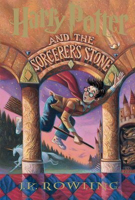
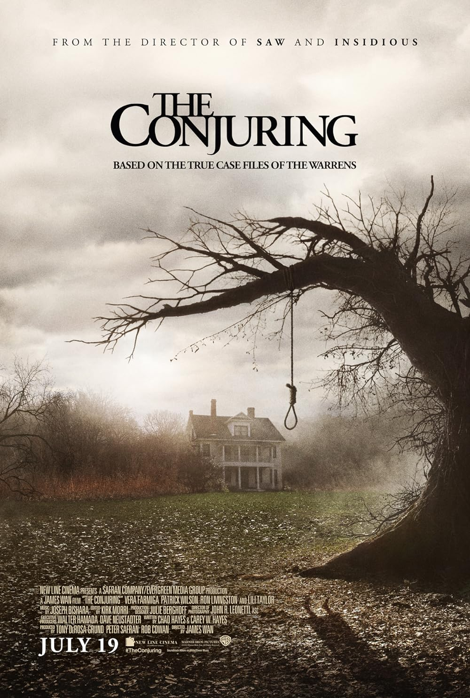

On this page I am going to talk about my favorite books
Harry Potter

Harry potter is a really good book, I remember my frist time reading it with my 6th grade teacher because she really loved Harry potter she was obsessed with the book and the series.
I enjoyed the book earlier because it was a nice fiction book with alot of adventures but later as i grew up I started finding it boring because it had nothing to do with the reality.n
I'm not really into reading books but i would like to watch all the harry potter series.
Frankenstein
Enjoyed the book Frankenstein
We read this book in my 3rd period english class and I didnt really liked the book at first but later on when we started doing the work on book it started gettting intresting and making me feel curious about the next scene.
The Conjuring

I like this movie because its based off the real horrors of exorcism and is super creepy